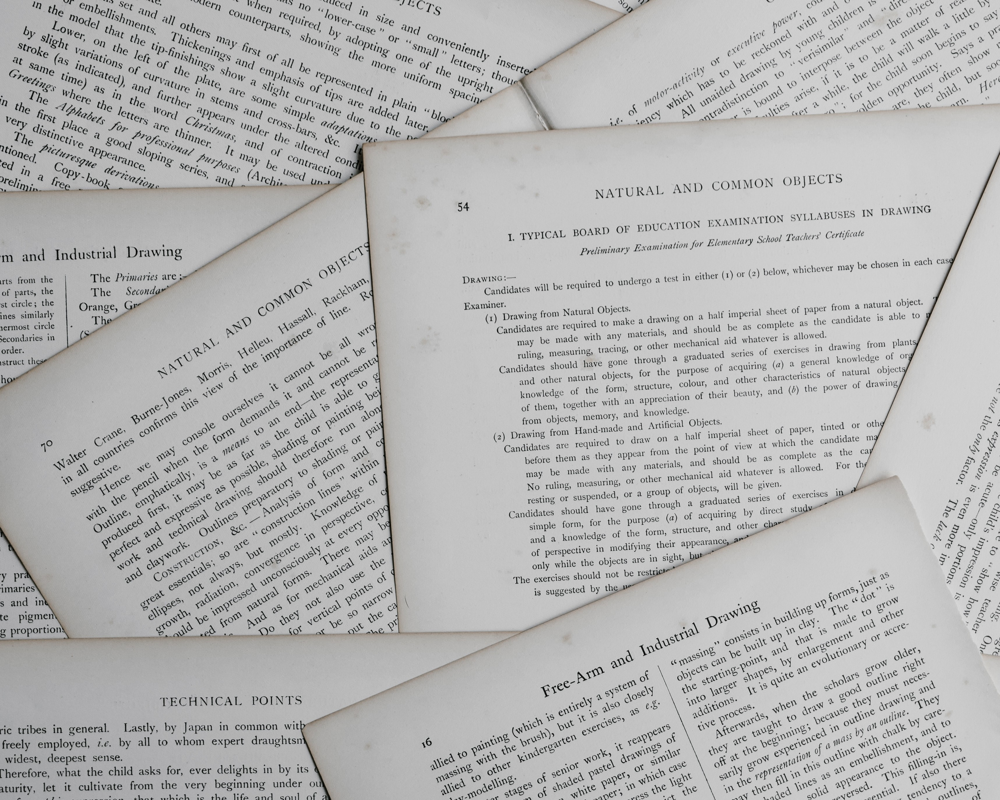

This research paper explores the impact of online learning on students' academic performance during the pandemic period of COVID-19, and provides recommendations for educators and practitioners to enhance academic performance and retention.

Project Overview :
This research paper investigates the impact of online learning on students' academic performance during the pandemic period of COVID-19.
It examines the factors affecting students' satisfaction and performance in online classes, reviews relevant literature on the role of technology in education, and proposes recommendations for educators and practitioners to address the challenges of online learning and produce better outcomes.
The study uses a questionnaire survey to collect data from students, and the findings suggest that online learning can have both positive and negative effects on academic performance, depending on various factors such as students' access to technology, their learning preferences, and the quality of online instruction.
The paper concludes with recommendations for educators and practitioners to enhance academic performance and retention in online learning environments.
Project Details :
1. Introduction:
- The aim of the study is to investigate the impact of online learning on students' academic performance during the pandemic period of COVID-19.
- The study examines the factors affecting students' satisfaction and performance in online classes, reviews relevant literature on the role of technology in education, and proposes recommendations for educators and practitioners to address the challenges of online learning and produce better outcomes.
2. Methodology:
- The study uses a questionnaire survey to collect data from students.
- The survey includes questions on students' demographic information, their experience with online learning, their satisfaction with online learning, and their academic performance.
- The data collected through the survey is analyzed using quantitative analysis approach, which involves applying statistical methods to identify the frequencies of the results.
3. Findings:
- The findings suggest that online learning can have both positive and negative effects on academic performance, depending on various factors such as students' access to technology, their learning preferences, and the quality of online instruction.
- The study identifies several factors that affect students' satisfaction with online learning, including the level of interaction with instructors and peers, the clarity of instructions and guidance, and the availability of support services.
4. Literature Review:
- The paper reviews relevant literature on the role of technology in education and highlights the potential benefits and challenges of online learning.
- The authors argue that online learning can provide greater flexibility and accessibility for students, but it also requires careful planning and design to ensure that students receive high-quality instruction and support.
5. Recommendations:
- The paper concludes with recommendations for educators and practitioners to enhance academic performance and retention in online learning environments.
- These recommendations include providing clear instructions and guidance for students, promoting interaction and collaboration among students and instructors, identifying and supporting struggling students, and using technology to enhance the learning experience.
In summary, the research paper investigates the impact of online learning on students' academic performance during the pandemic period of COVID-19, and provides recommendations for educators and practitioners to enhance academic performance and retention. The study uses a questionnaire survey to collect data from students, and the findings suggest that online learning can have both positive and negative effects on academic performance, depending on various factors. The paper reviews relevant literature on the role of technology in education and concludes with practical recommendations for educators and practitioners to improve the quality of online instruction and support.
Key Findings :
1. Online learning can have both positive and negative effects on academic performance, depending on various factors such as students' access to technology, their learning preferences, and the quality of online instruction.
2. Students' satisfaction with online learning is influenced by several factors, including the level of interaction with instructors and peers, the clarity of instructions and guidance, and the availability of support services.
3. The study found that students who had access to high-quality online instruction and support services performed better academically than those who did not.
4. The study also found that students who preferred online learning and had prior experience with it tended to perform better than those who did not.
5. The study identified several challenges of online learning, including the lack of face-to-face interaction, the difficulty of staying motivated and focused, and the technical issues that can arise.
6. The study recommends that educators and practitioners should provide clear instructions and guidance for students, promote interaction and collaboration among students and instructors, identify and support struggling students, and use technology to enhance the learning experience.
Overall, the findings suggest that online learning can be an effective platform for education, but it requires careful planning and design to ensure that students receive high-quality instruction and support. The study provides valuable insights into the factors that affect students' satisfaction and performance in online learning environments, and offers practical recommendations for educators and practitioners to improve the quality of online instruction and support.